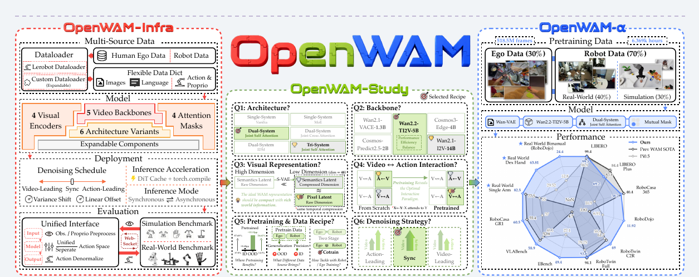
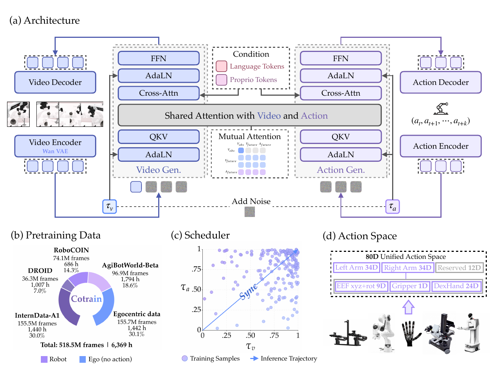
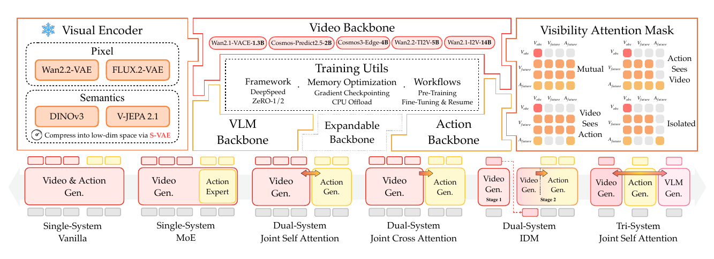
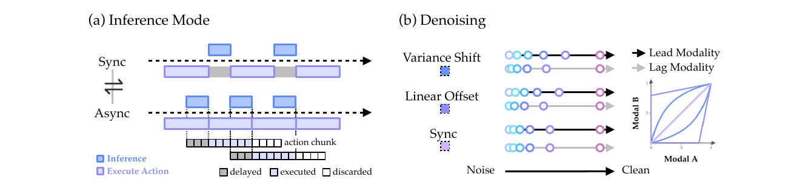
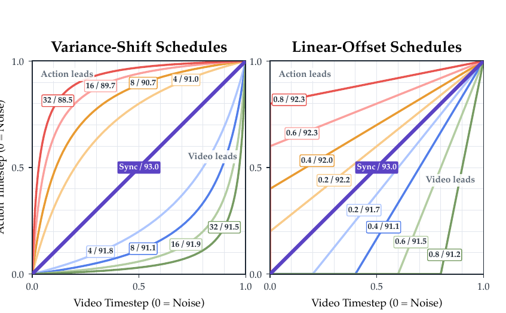
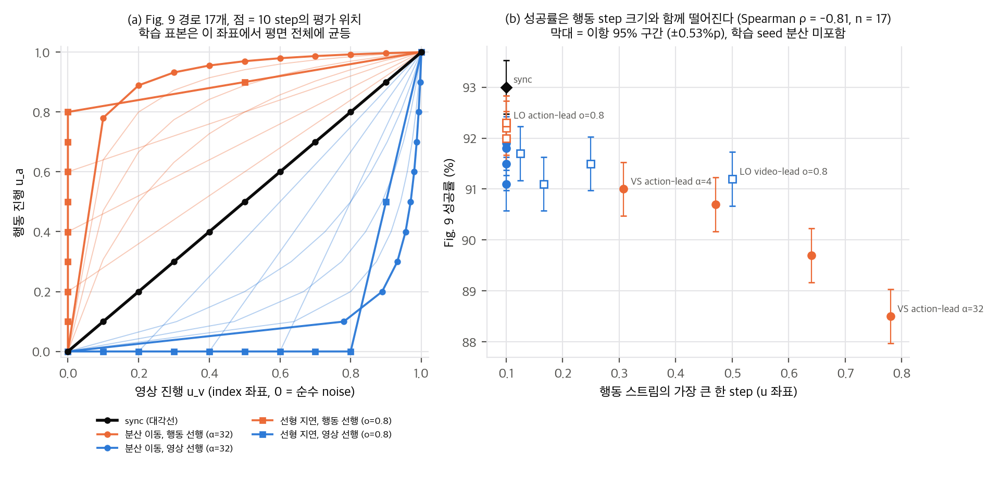
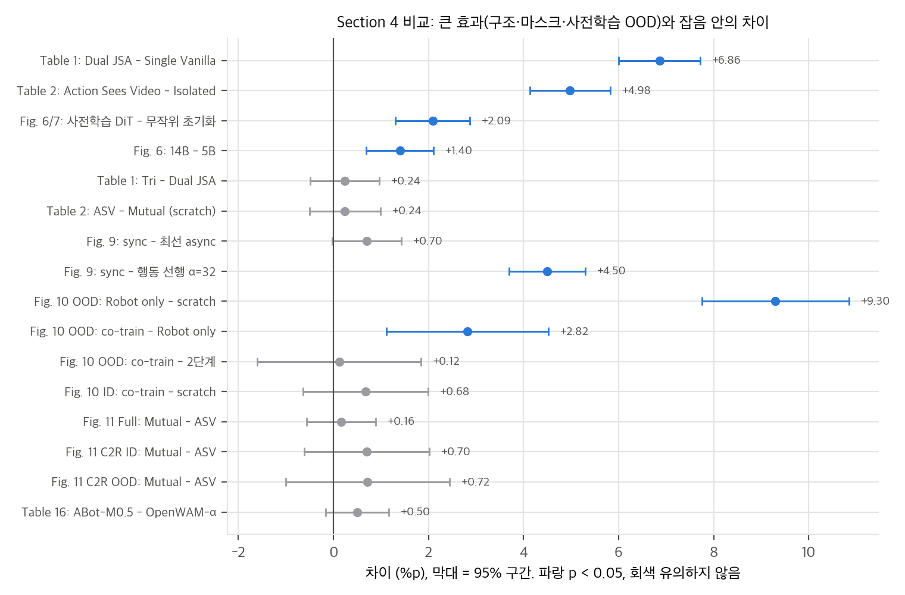
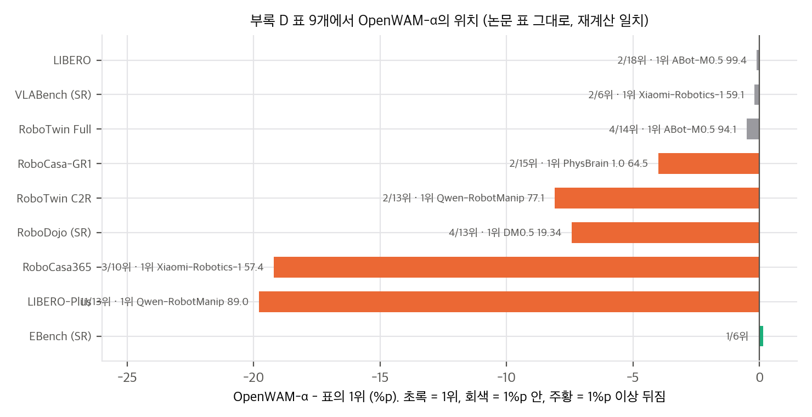
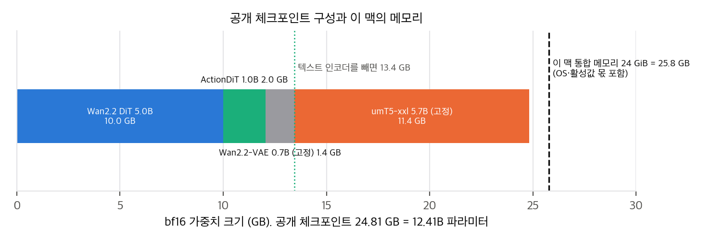

논문 Fig. 1: OpenWAM-Infra(모듈형 학습·배포·평가), OpenWAM-Study(통제 실험), OpenWAM-α(518.5M 프레임 사전학습 모델).

논문 Fig. 12: OpenWAM-α의 구조, 사전학습 혼합, timestep 표본(학습은 평면 전체, 추론은 대각선), 80D 통합 행동 공간.
OpenWAM-Official/OpenWAM(Apache-2.0), Hugging Face 모델 46개(사전학습 1, 벤치마크·실물 SFT 13, Study ablation 32), 데이터셋 9개. 자세한 표는 02 §4에 있습니다.영상 생성 모델은 "세상이 어떻게 변하는가"를 배웠고, 로봇 궤적은 "무엇을 하면 되는가"를 줍니다. WAM은 앞의 것을 초기값으로 삼아 뒤의 것을 배웁니다(§1). 저자들은 기존 WAM 시스템이 백본, 시각 표현, 구조, 정보 흐름, 추론 방식, 데이터가 한 덩어리로 묶여 있어서, 무엇이 성능을 만들었는지 가를 수 없다고 봅니다(§1, §2). 그래서 세 질문을 세웁니다.
| 질문 | 다루는 절 | 답(Finding) |
|---|---|---|
| Q1. WAM은 어떤 세계 지식을 물려받아야 하나 | §4.1 | 충분히 큰 생성 백본과 압축되고 정보가 많은 latent (Finding 1) |
| Q2. 세계 학습과 행동 학습의 시너지는 어떻게 만드나 | §4.2 | 행동 전용 용량, 학습 때 영상→행동 정보 경로, 추론 때 동기 denoising (Finding 2) |
| Q3. 그 시너지를 여러 도메인으로 키우려면 | §4.3 | 사전학습은 주로 OOD를 늘린다. 사람 영상 + 로봇 데이터 1단계 공동학습, mutual 마스크 (Finding 3) |
기여는 세 층입니다. OpenWAM-Infra(모듈형 학습·배포·평가 코드), OpenWAM-Study(통제 실험), OpenWAM-α(사전학습 모델과 벤치마크 8개 + 실물 3종 평가)입니다.
모델 하나는 세 부품의 조합입니다.
구조는 세 계열 일곱 변형입니다(Fig. 2 아래 줄, Table 1). Single-System(Vanilla, 행동 토큰만 다른 FFN으로 보내는 MoE), Dual-System(joint self-attention, joint cross-attention과 그 gradient 차단판, 영상을 먼저 만들고 행동을 역동역학으로 푸는 IDM), Tri-System(+Qwen3-VL, 읽기 전용 꼬리)입니다. 대표 시스템으로 Single은 Cosmos Policy·DreamZero, Dual은 Fast-WAM·LingBot-VA, Tri는 Motus를 듭니다.

논문 Fig. 2: 위는 교체 가능한 부품 세 종류(시각 인코더, 스트림 백본, 가시성 마스크), 아래는 구조 7종.
표본은 (지시문 ℓ, 영상 창 o₁:T, 행동 chunk a₁:H, 고유수용 상태 q, 차원별 유효 마스크 m)입니다. 논문 표기로 t = 0이 순수 noise, t = 1이 깨끗한 데이터이고, 두 스트림이 각자 독립으로 뽑은 t_v, t_a로 noise를 받습니다.
L = λ_v E[w(t_v) ‖v̂_z − (z − ε_v)‖²] + λ_a E[w(t_a) ‖m ⊙ (v̂_a − (a − ε_a))‖²] (Eq. 2)
깨끗한 조건 프레임은 영상 손실에서 빠지고, m이 각 embodiment가 실제로 채운 행동 좌표만 남깁니다. 저자들은 t_v, t_a를 독립으로 뽑으므로 학습이 (t_v, t_a) 평면 전체를 덮고, 따라서 어떤 추론 경로도 분포 안이라고 주장합니다(§3.2). OpenWAM-α는 λ_v = λ_a = 1, 중간 noise에서 최대인 종 모양 w(·), t = 1 − f_ρ(u)(u 균등, ρ = 5로 고noise 쪽에 치우침)를 씁니다(§5.1.2). 실제 식과 학습 분포의 모양은 03 §1, 코드 대조는 04 D4–D6에 있습니다.

논문 Fig. 3: (a) 동기·비동기 추론 모드 (b) 분산 이동, 선형 지연, 동기 denoising 경로.
벤치마크는 WebSocket 클라이언트로 정책 서버에 붙고, 관측(카메라 최대 3개, 지시문, 상태)을 보내 행동 한 개를 받습니다. 정규화, 카메라 배치, 역정규화는 서버가 체크포인트 기록대로 처리합니다. 실물 로봇도 같은 인터페이스를 씁니다. 여러 embodiment를 한 모델로 학습할 때는 80차원 통합 행동 공간을 씁니다. 팔 블록 34차원 × 2(말단 위치 3 + 6D 회전 6 + 그리퍼 1 + 손 24)와 예비 12칸이고, 각 데이터셋이 index map π로 흩어 넣습니다(Eq. 4). 채워지지 않은 칸은 m으로 손실에서 빠집니다.
평가는 RoboTwin 2.0 두 설정입니다. Full(clean 2,500 + randomized 25,000 시연으로 학습, 두 조건 평가)과 Clean2Random(clean만 학습, randomized가 OOD)입니다.
| 실험 | 결과 | 출처 |
|---|---|---|
| 영상 백본 크기 | 1.3B 90.14 → 2B 91.64 → 5B 92.39 → 14B 93.79. 5B를 기본으로 채택 | Fig. 6 |
| 시각 인코더 (DiT 무작위 초기화) | DINOv3 76.42, V-JEPA 80.91, FLUX.2 84.26, V-JEPA+S-VAE 88.46, DINOv3+S-VAE 90.18, Wan2.2-VAE 90.30 | Fig. 7 |
| 구조 | Single Vanilla 85.50, MoE 84.63, Dual JSA 92.36, JCA 88.25, Detached CA 91.85, IDM 87.95, Tri JSA 92.60 | Table 1 |
| 학습 때 마스크 | Isolated 87.41, Video Sees Action 87.63, Action Sees Video 92.39, Mutual 92.15 | Table 2 |
| 추론 때 경로 | 동기 93.0. 비동기 16개는 88.5–92.3으로 모두 낮음 | Fig. 9 |
| 사전학습 (600시간 예산) | OOD: scratch 14.50 → robot only 23.80 → 2단계 26.50 → 공동학습 26.62. ID는 87.00–88.50 | Fig. 10 |
| 사전학습 후 마스크 | Mutual − ASV: scratch Full −0.24, 사전학습 Full +0.16, C2R ID +0.70, OOD +0.72 | Fig. 11 |
저자들의 결론(Table 3)은 Wan2.2-TI2V-5B + 압축 latent, Dual joint self-attention + 동기 denoising, 사람 영상 + 로봇 1단계 공동학습 + mutual 마스크입니다.

논문 Fig. 9: 비동기 경로 16개와 동기의 RoboTwin2.0-Full 성공률.
해석 (재계산은 03 §2–3, 04 C5–C6):
04 D3).| 벤치마크 | OpenWAM-α | 표의 1위 | 순위 |
|---|---|---|---|
| LIBERO (Table 13) | 99.3 | ABot-M0.5 99.4 | 2/18 |
| VLABench SR (Table 14) | 58.9 | Xiaomi-Robotics-1 59.1 | 2/6 (IS 기준 5/6) |
| RoboTwin2.0-Full (Table 16) | 93.60 | ABot-M0.5 94.10 | 4/14 (LingBot-VA 2.0과 동률) |
| RoboTwin2.0-Clean2Random (Table 15) | 69.0 | Qwen-RobotManip 77.1 | 2/13, WAM 중 1위(다음 4D-WAM 61.7) |
| RoboDojo SR (Table 17) | 11.92 | DM0.5 19.34 | 4/13, WAM 중 1위(다음 X-WAM 3.83) |
| EBench SR / Score (Table 18) | 49.4 / 64.7 | (1위) | 1/6 |
| RoboCasa365 (Table 19) | 38.2 | Xiaomi-Robotics-1 57.4 | 3/10 |
| RoboCasa-GR1 (Table 20) | 60.5 | PhysBrain 1.0 64.5 | 2/15 |
| LIBERO-Plus (Table 5) | 69.2 | Qwen-RobotManip 89.0 | 11/13 |
04 C7).| 플랫폼 | 비교 | 결과 | 통계 (04 C9) |
|---|---|---|---|
| Franka 단일 팔 6과제 × 20회 (Table 6) | π0.5, LingBot-VA | 99/120 vs 93/120 vs 66/120 | LingBot-VA와 차이 p = 0.42 (유의하지 않음), π0.5와는 p = 7×10⁻⁶ |
| RoboDojo-Real 3 embodiment × 6과제 × 10회 (Table 7) | VLA 5종 | Score 37.6 / SR 24.4 vs π0.5 22.9 / 12.8 | SR 44/180 vs 23/180, p = 0.006. Score 기준 18과제 중 13과제 최고 |
| Wuji 손 + Tianji 팔 4과제 (Table 8) | π0.5 | ID SR 27/40 vs 12/40, OOD 40/65 vs 19/65 | 합치면 p = 0.002, 0.0004. 과제별로는 8개 중 2개만 p < 0.05 |
Wuji 손의 9D 말단 자세 + 21자유도 손은 사전학습에 없던 embodiment입니다. Collect Shuttlecocks OOD는 점수 분모가 π0.5 54, OpenWAM-α 57로 달라서 시행 조건이 같지 않습니다.
저자들이 적은 한계(부록 A)는 사후학습(post-training)을 다루지 않았다는 점, 융합 방식이 교차 주의와 hard-routed MoE에 머물렀다는 점, UMI식 데이터가 빠졌다는 점, Wan2.2-VAE가 시점·잡음·장면 변화에 약하다는 점입니다.
비판적으로 읽으면 다음이 더 중요합니다.
03 §3).03 §2).04 D1).04 D3).04 §4).재계산 스크립트는 analysis/table_check.py(→ table_check_results.json)와 analysis/noise_toy.py(→ noise_toy_results.json)입니다. 둘 다 단일 스레드 numpy로 이 맥에서 각각 약 1초, 약 1분 걸립니다.
논문은 t = 0이 noise, t = 1이 데이터이고 목표 velocity가 z − ε입니다(Eq. 2). 코드는 σ = 1이 noise이고 x_σ = (1 − σ)x + σε, 목표가 ε − x입니다(action_backbone/scheduler.py). σ = 1 − t로 바꾸면 dx/dσ = −dx/dt라서 두 식은 같습니다.
학습 grid는 u = k/1000(k = 0…999)을 σ = f₅(1 − u)로 보낸 1000칸입니다. f_ρ(s) = ρs / (1 + (ρ − 1)s)입니다. 두 스트림은 index k를 각자 독립으로 균등하게 뽑습니다(architectures/base.py 1089, 1113행). 따라서
index 좌표 (u_v, u_a)에서 학습 표본은 단위 정사각형 위에 균등 분포합니다.
σ 좌표로 보면 shift 5 때문에 noise 쪽이 25배 조밀합니다. 표본의 35.8%가 σ ≥ 0.9이고, σ < 0.1은 2.1%뿐입니다.
"종 모양 가중치"(§5.1.2)의 실제 식은 다음과 같습니다(_set_training_weight).
w(σ) ∝ exp(−2(σ − 0.5)²) − min_grid exp(−2(σ − 0.5)²)
최솟값이 σ = 1에서 나오므로 순수 noise에서 가중치가 정확히 0이고, σ = 0.5에서 최대, σ → 0에서도 거의 0입니다. 표본 밀도와 곱하면 학습 신호의 65%가 σ ∈ [0.5, 0.9]에 몰립니다. σ ≥ 0.9는 표본의 36%지만 가중 손실의 10%입니다(noise_toy_results.json A).
Eq. 3의 선행 곡선은 진행도 s(0 = noise)에서 깨끗함 f_α(s)입니다. 코드는 σ 좌표 s' = 1 − s에서 계산하는데, 다음 항등식을 씁니다.
1 − f_α(1 − s') = 1 − α(1 − s') / (1 + (α − 1)(1 − s')) = s' / (α − (α − 1)s') = f_{1/α}(s')
그래서 lead_sigma = f_{1/α}(s')이고 α = 1에서 비트 단위로 동기와 같습니다. 선형 지연 h_o는 σ 좌표에서 min(s'/(1 − o), 1)입니다. 두 경로 모두 마지막에 각 스트림의 shift 5 grid를 통과합니다(deploy/denoise_schedule.py). 결과적으로 Fig. 9의 경로 17개는 모두 index 좌표의 단위 정사각형 안에 있고, 학습 표본 밀도는 어느 경로에서나 같습니다.

우리 분석: (a) Fig. 9 경로 17개를 코드 식 그대로 index 좌표에 그림(점 = 10 step의 평가 위치). (b) Fig. 9 성공률 대 행동 스트림의 가장 큰 한 step.
1.1에 따라 어떤 경로도 학습 표본 밀도가 같습니다. 대각선 근처 띠(|u_v − u_a| < 0.05)의 질량은 9.75%로, 다른 경로 근처 띠와 다르지 않습니다. 논문의 "모든 경로가 분포 안" 서술(§3.2)은 표본 밀도로는 정확히 맞습니다. 따라서 비동기 경로가 나쁜 이유를 학습 표본 부족으로 설명할 수 없습니다.
noise_toy.py B는 (미래 영상 8차원, 행동 4차원)이 4개 봉우리의 Gaussian 혼합인 세계를 만듭니다. 영상 평균은 행동 평균의 선형 사상이라 영상이 어느 봉우리인지 알려 줍니다. 정확한 사후 평균으로 velocity를 만들어 각 경로를 10 step Euler로 적분하고, 최종 행동이 어떤 봉우리의 99% 영역 안에 들어간 비율("유효 행동")을 셉니다.
| 경로 (봉우리 폭 0.15) | 유효 행동 | Fig. 9 |
|---|---|---|
| 동기 | 0.949 | 93.0 |
| 분산 이동, 영상 선행 α = 4–32 | 0.985–0.994 | 91.1–91.9 |
| 분산 이동, 행동 선행 α = 4–32 | 0.967–0.986 | 88.5–91.0 |
| 선형 지연, 영상 선행 o = 0.2–0.8 | 0.917–0.942 | 91.1–91.7 |
| 선형 지연, 행동 선행 o = 0.2–0.8 | 0.832–0.927 | 92.0–92.3 |
| 동기 400 step (기준) | 0.993 | – |
경로별 통계 다섯 개 가운데 Fig. 9 성공률과 강하게 상관된 것은 행동 스트림이 한 번에 건너뛰는 index 거리의 최댓값뿐입니다(Spearman ρ = −0.82, p = 7×10⁻⁵, n = 17). 행동 선행 α가 커질수록 첫 step이 σ_a = 1 → 0.58(α = 32, u 거리 0.78)로 커지고, 성공률이 91.0 → 88.5로 떨어집니다. 행동이 갱신되는 횟수(ρ = 0.15), 행동이 절반쯤 정해질 때 영상 noise(ρ = −0.23), 손실 가중치 평균(ρ = −0.03)은 상관이 없습니다.
해석에는 주의가 필요합니다. 값이 0.1 단위로 반올림되어 있고, 16개 비동기 값 대부분이 서로 표본 오차(±0.53%p, 95%) 안이며, 상관은 사실상 행동 선행 분산 이동 계열 4점이 만듭니다. 그래도 다음 두 가지는 말할 수 있습니다.
RoboTwin 평가는 과제 50개 × 100 episode, seed 0 한 번입니다(공식 benchmarks/robotwin/README.md). 조건 하나는 N = 5,000, 두 조건 평균은 N = 10,000입니다. 92% 근처에서 평균 SE는 0.27%p, 두 실행 차이의 SE는 약 0.37%p입니다. 과제가 고정되어 있으므로 이 이항 SE는 episode 표본 오차의 상한입니다. 그러나 학습 seed 분산이 빠져 있어 실제 불확실성은 이보다 큽니다.

우리 분석: Section 4 비교의 차이와 95% 구간. 파랑은 p < 0.05.
| 서열 | 효과 | 차이 | z |
|---|---|---|---|
| 1 | 사전학습의 OOD 이득 (Fig. 10, robot only − scratch) | +9.3%p | 11.8 |
| 2 | 구조 용량 (Table 1, Dual JSA − Single Vanilla) | +6.9%p | 15.5 |
| 3 | 학습 때 영상→행동 경로 (Table 2, ASV − Isolated) | +5.0%p | 11.7 |
| 4 | 추론 경로의 큰 행동 step (Fig. 9, 동기 − 행동 선행 α = 32) | +4.5%p | 11.0 |
| 5 | 사람 영상 추가의 OOD 이득 (Fig. 10, 공동학습 − robot only) | +2.8%p | 3.3 |
| 6 | 사전학습된 DiT 초기화 (Fig. 6 5B 92.39 − Fig. 7 무작위 초기화 90.30) | +2.1%p | 5.3 |
| 7 | 백본 5B → 14B (Fig. 6) | +1.4%p | 3.9 |
| – | Tri − Dual, ASV − Mutual(scratch), 공동학습 − 2단계, Mutual − ASV(사전학습 후 세 경우), 동기 − 최선 비동기 | 0.1–0.7%p | 0.1–1.9 |
여기서 보이는 것은 다음과 같습니다.
total_hours는 사람 영상과 InternData-A1이 둘 다 1439.0268시간으로 완전히 같습니다. 둘 다 30% 프레임 목표이고 30 fps라서 같은 시간이 됩니다. Table 4는 1,442와 1,440으로 적었고, 실제로 뽑힌 양이 목표보다 조금 많았던 것으로 보입니다.base.py 1296–1297행). 표본의 30%가 사람 영상이므로 사전학습의 실효 λ_a ≈ 0.70이고, 논문의 λ_a = 1(Table 9)과 다릅니다. SFT에서는 1입니다.
우리 분석: 부록 D 표 9개에서 OpenWAM-α와 1위의 차이(논문 표 수치).
assets/robodojo_verification/). 시드별 평균 SR은 11.80, 11.68, 12.28, SD 0.32입니다. 1위 DM0.5(19.34)와의 차이는 시드 SD의 23배라서 순위는 확실합니다. 42과제 가운데 14과제는 세 시드 모두 성공 0입니다.extra_learned_denoiser.py)noise_toy.py의 세계(봉우리 4개, 영상 8차원, 행동 4차원, base 폭 0.15), 경로 식, Fig. 9 값을 그대로 씁니다. 학습 데이터는 두 스트림의 σ를 독립으로 균등 추출한 결합 flow matching입니다(목표 ε − x₀, 코드 부호). 모델은 2층 tanh MLP(폭 128)이고 입력은 [x_t, σ_v, σ_a]입니다. Adam 1e-3, 배치 512, 15000회, 시드 3개, 손실은 가중치 없는 MSE입니다. 코드의 손실 가중치 w(σ)는 어느 스트림의 σ에 곱하는지 확인하지 못해서 넣지 않았습니다. 평가는 경로마다 10 step Euler, 초기 잡음 2만 개입니다. 지표는 행동이 봉우리 99% 영역 안에 드는 비율입니다.| 경로 | Fig. 9 (%) | 학습 모델 | 이상적 사후 평균 (§2.2) |
|---|---|---|---|
| 동기 | 93.0 | 0.770 | 0.949 |
| 행동 선행 α=4 / 8 / 16 / 32 | 91.0 / 90.7 / 89.7 / 88.5 | 0.860 / 0.868 / 0.858 / 0.817 | 0.984 / 0.986 / 0.980 / 0.967 |
| 영상 선행 α=4 / 8 / 16 / 32 | 91.8 / 91.1 / 91.9 / 91.5 | 0.893 / 0.905 / 0.892 / 0.856 | 0.992 / 0.994 / 0.993 / 0.985 |
| 행동 선행 지연 o=0.2 / 0.4 / 0.6 / 0.8 | 92.2 / 92.0 / 92.3 / 92.3 | 0.745 / 0.731 / 0.746 / 0.778 | 0.927 / 0.897 / 0.861 / 0.832 |
| 영상 선행 지연 o=0.2 / 0.4 / 0.6 / 0.8 | 91.7 / 91.1 / 91.5 / 91.2 | 0.761 / 0.778 / 0.819 / 0.853 | 0.942 / 0.930 / 0.926 / 0.917 |
OpenWAM-Official/OpenWAM @ a00c4ba (2026-11-02, shallow clone, third_party/cosmos-predict2.5 서브모듈은 받지 않음). Hugging Face OpenWAM/ 모델 46개·데이터셋 9개는 메타데이터, config, safetensors 헤더(가중치 아님)만 받았습니다. XPolicyLab/XPolicyLab은 API로 HEAD 6baccd5만 확인했습니다.| 논문 | 구현 위치 | 일치 여부 |
|---|---|---|
| C(E, S, M) 조합, 레지스트리 (§3.1) | openwam/model/architectures/{single_system,dual_system,tri_system}/, configs/model/*.yaml |
✅ 구조 7종이 모두 있습니다 |
| 백본 실행 계약 prepare / block step / finalize (§3.1) | architectures/base.py의 BaseWAMArchitecture |
✅ |
| 마스크 4종, 영상 first-frame causal (Eq. 1) | attention_mask_mode: mutual, video_attention_mask_mode: first_frame_causal (dual_system.yaml, 사전학습 config) |
✅ |
| 영상 백본 5종 (§3.1) | configs/model/video_backbone/ (wan21_vace_1_3b, cosmos_predict25_2b, cosmos3_edge, wan22_ti2v_5b, wan21_i2v_14b_480p) |
✅ Cosmos3-Edge는 Fig. 6에 결과가 없지만 HF에 ablation 체크포인트가 있습니다 |
| ActionDiT 1B, 폭 1024 (§5.1.1) | configs/model/action_backbone/separate_action_dit.yaml (dim 1024, ffn 4096), 헤더 합계 1.021B |
✅ |
| 결합 flow matching, 독립 timestep (Eq. 2) | base.py 1089행(영상), 1113행(행동)에서 각자 torch.randint |
✅ 부호 규약은 D4 |
| 유효 마스크 m, 조건 프레임 제외 | base.py 1206–1215행(첫 latent 제외), 1288–1297행(행동 유효 칸 평균) |
✅ 배치 평균 방식은 D6 |
| 종 모양 가중치, shift 5 (§5.1.2) | action_backbone/scheduler.py: _set_training_weight, shift_video: 5.0, shift_action: 5.0 |
✅ 식은 D5 |
| 동기·비동기 경로 (Eq. 3) | openwam/deploy/denoise_schedule.py |
✅ 항등식으로 구현(03 §1.3) |
| 추론 모드 동기·비동기 (§3.3) | openwam/deploy/executors/, inference_mode: sync |
✅ |
| 가속 4종 (§3.3) | configs/deploy.yaml: prompt 캐시, decode_video: false, compile.enabled: true, dit_cache (cosine 0.99, 최대 3회 연속 skip) |
✅ 평가 설정은 D3 |
| WebSocket 서버, 정규화 기록 (§3.2, §3.4) | openwam/deploy/server.py, policy.py, model_loader.py, 체크포인트의 normalization_stats.npy |
✅ |
| 80D 통합 행동 공간 (Eq. 4) | map_to_unify(정규화 뒤 scatter), 로더별 _unify_dst_index |
✅ |
| 사전학습 혼합, 소스별 시간 예산 (§5.2.1) | openwam/dataloader/mixture.py (weight_strategy: proportional, total_hours) |
⚠️ D1 |
| 벤치마크 어댑터 8종 (§3.4) | benchmarks/{libero,libero-plus,vlabench,robotwin,robodojo,robocasa365,ebench,robocasa_gr1}/ |
✅ RoboDojo 평가는 XPolicyLab을 거칩니다 |
| # | 내용 | 영향 |
|---|---|---|
| D1 | 사전학습 혼합을 공개 코드로 만들 수 없습니다. HF 사전학습 config는 소스 다섯 개 중 첫째를 type: worldengine으로 지정하는데, 데이터셋 레지스트리(dataloader/registry.py)에 이 타입이 없습니다. Study(§4.3)에서 쓴 EgoDex 로더도 테스트의 mock에만 있습니다. 공개 configs/dataloader/mixture.yaml은 로봇 소스 4개만 있고 total_hours가 없어 전체를 비율대로 씁니다. 소스별 dataset_dir는 작성자 서버의 절대 경로입니다. |
사람 영상 30% 없이는 OpenWAM-α 사전학습도, Fig. 10–11의 ego 변형 학습도 재현할 수 없습니다. 대신 Study 사전학습 변형 5개와 그 SFT 7개의 체크포인트는 공개되어 있어 평가는 재현할 수 있습니다. |
| D2 | 공개 사전학습 체크포인트는 checkpoint_step_154000이고, Table 9는 155,862 iteration(1 epoch)입니다. |
98.8% 지점의 체크포인트입니다. SFT 체크포인트 13개의 step은 Table 10과 모두 일치합니다(C4). |
| D3 | 평가 설정이 벤치마크마다 다릅니다. RoboTwin은 deploy.yaml 기본값(velocity 캐시 on, compile on), 과제당 100 episode, seed 0입니다. 공식 README는 "캐시를 끄면 수치가 바뀐다"고 적었습니다. EBench는 캐시 off, compile off로 보고했습니다. LIBERO는 과제당 50회(seed 42), LIBERO-Plus는 과제당 1회, EBench는 26과제 × 20 episode(두 과제는 15), RoboDojo는 3 seed × 50 episode입니다. |
논문 §5.1.3은 동기 모드라서 결과가 "모델 자체의 성능을 가장 직접 반영한다"고 했지만, velocity 캐시는 forward를 건너뛰는 근사입니다. 캐시가 RoboTwin 점수에 주는 영향은 공개되지 않았습니다. 재현할 때 README의 벤치마크별 설정을 그대로 써야 합니다. |
| D4 | 부호 규약이 논문과 반대입니다. 코드는 σ = 1이 noise이고 목표가 ε − x, 논문은 t = 0이 noise이고 z − ε입니다. | 수학적으로 같습니다(03 §1.1). 코드를 읽을 때만 주의하면 됩니다. |
| D5 | "종 모양 가중치"의 실제 식은 exp(−2(σ − 0.5)²)에서 grid 최솟값을 뺀 것입니다. 순수 noise(σ = 1)에서 가중치가 0입니다. shift 5 표본추출과 합치면 표본의 36%가 σ ≥ 0.9인데 가중 손실은 10%입니다. | 논문에 식이 없습니다. 고noise 쪽에 표본을 몰아 주면서 손실은 깎는 조합이라, 다른 구현으로 옮길 때 그대로 맞춰야 합니다. |
| D6 | 사람 영상 표본도 행동 손실의 배치 평균 분모에 들어갑니다. 표본별 행동 손실은 유효 칸 평균이고(clamp(min=1)), 유효 칸이 없는 사람 영상은 0이 되어 .mean()에 그대로 들어갑니다(base.py 1296–1297행). |
사전학습의 실효 λ_a ≈ 0.70입니다(표본의 30%가 사람 영상). 논문은 λ_a = 1이라고 적었습니다(Table 9). SFT는 1입니다. 사람 영상 비율을 바꾸면 행동 손실 크기도 함께 바뀝니다. |
| D7 | 비동기 경로에서 코드는 α와 o를 동시에 줄 수 있습니다(선행에 α, 후행에 o). 선행 곡선은 σ 좌표의 f_{1/α}로 계산합니다. | 논문은 두 계열을 따로 실험했습니다. 식은 같습니다(03 §1.3). |
| D8 | 공개 configs/train.yaml 기본값은 GPU당 batch 16, 5 epoch, RoboTwin 로더, gradient checkpointing on입니다. 사전학습 config(HF)는 GPU당 24, 1 epoch, gradient checkpointing off입니다. |
사전학습 설정은 HF 체크포인트에 딸린 config.yaml에서 가져와야 합니다. H200(141 GB)에서 checkpointing을 끈 batch 24는 80 GB GPU에서 그대로 돌지 않을 수 있습니다. |
| D9 | 로더가 소스별 fps를 맞추지 않습니다. 창은 원 fps 기준 33프레임, 행동은 32 step이고, 영상만 stride 4로 줄입니다(robotwin.py, lerobot_v3_reader.py). |
같은 chunk가 30 fps 소스에서는 1.07초, AgiBot(15 fps) 2.1초, DROID(10 fps) 3.2초입니다. 80D 슬롯 의미는 같아도 시간 축 의미가 소스마다 다릅니다. 논문에는 언급이 없습니다. |
| D10 | 1 epoch 정의가 맞지 않습니다. 학습 창은 매 프레임에서 시작할 수 있고(최소 창 길이 1–2, 끝은 마지막 프레임 반복) 창 수 ≈ 프레임 수입니다. 그런데 155,862 × 3,072 = 478.8M으로 518.5M 프레임보다 7.7% 적습니다. | 원인을 코드에서 찾지 못했습니다. 사람 영상 로더(비공개)의 창 규칙이 다르거나 Table 4 프레임 수 정의가 다를 수 있습니다. |
| D11 | OpenWAM-Alpha 체크포인트 14개(사전학습, SFT)가 모두 고정된 umT5-xxl(5.68B)과 VAE(0.70B)까지 담은 24.81 GB 한 파일입니다(ablation 32개의 크기는 확인하지 않음). 학습되는 부분은 6.02B입니다(C3). | 추론 메모리의 절반 가까이가 매 요청마다 쓰지 않는 텍스트 인코더입니다(prompt 캐시가 있으므로). 저메모리 기기에서 가장 먼저 덜어 낼 부분입니다(§4). |
| D12 | 실행 환경은 CUDA 중심입니다. README는 PyTorch 2.7.1 + CUDA 12.8, Docker CUDA 이미지를 권하고, 기본 장치는 cuda:0입니다(--device로 바꿀 수 있음). 주의 구현은 flash-attn 3/2, SageAttention, xformers 중 설치된 것을 쓰고, 없으면 torch SDPA로 내려갑니다. Cosmos 백본은 transformer-engine 컴파일(nvcc)이 필요합니다. MPS 경로는 코드에 없습니다. |
맥에서는 공식 경로로 실행할 수 없습니다. 수정 후 가능성은 §4.2에 있습니다. |
| D13 | RoboDojo 시드별 결과 파일(assets/robodojo_verification/)과 검증 스크립트가 공개되어 있습니다. |
이 파일로 Table 17의 OpenWAM-α 행 14칸을 정확히 재현했습니다(C8). 다른 벤치마크에는 episode 단위 결과 파일이 없습니다. |
| D14 | 사전학습 config의 소스별 total_hours는 사람 영상과 InternData-A1이 1439.0268로 같고, 합이 6,365.0시간입니다(Table 4는 6,369). |
30% 프레임 목표를 시간으로 바꾼 값이라 일치합니다. 표는 실제로 뽑힌 양입니다(03 §4.1). |
analysis/table_check.py, analysis/noise_toy.py)| # | 주장 (출처) | 재계산 | 판정 |
|---|---|---|---|
| C1 | 518.5M 프레임, 6,369시간, 30/40/30 (Table 4, §5.2.1) | 합계 일치. 사람 30.03%, 실제 로봇 39.98%, 합성 29.99%. 프레임/fps는 RoboCOIN Full(967.6 vs 956시간)만 1.2% 어긋남 | ✅ (RoboCOIN Full 소폭 불일치) |
| C2 | 128 H200 × 7일, 155,862 iteration (Table 9) | 478.8M 클립, 21,504 GPU-h, 3.88초/step, DiT 행렬곱 기준 MFU 약 7%(하한) | 참고. 1 epoch 정의 불명(D10) |
| C3 | 5B DiT + 1B ActionDiT, umT5·VAE 고정 (§5.1) | safetensors 헤더: DiT 5.000B, Action 1.021B, umT5 5.681B, VAE 0.705B, 합 12.407B(bf16 24.81 GB) | ✅ |
| C4 | SFT 설정 (Table 10) | HF 체크포인트 파일의 step 13개가 모두 일치 | ✅ |
| C5 | Section 4 표 내부 일관성 (Table 1–2, Fig. 6, 10, 11) | Table 1–2 평균 일치. Fig. 6 5B = Table 2 ASV(92.39). Fig. 11 scratch Mutual = Table 2(92.15). Fig. 11 사전학습 C2R OOD Mutual 26.42 vs Fig. 10 공동학습 26.62 | ⚠️ 0.20 불일치 1건 |
| C6 | Finding 2–3의 비교 (Fig. 9–11) | 과제 50 × 100 episode 이항 근사: mutual vs ASV p = 0.29–0.67, 공동학습 vs 2단계 p = 0.89, 동기 vs 최선 비동기 p = 0.06. 큰 효과(구조, 마스크, 사전학습 OOD)는 z > 10 | 일부만 ✅ (03 §3) |
| C7 | 부록 D 평균·순위, "최상위권" (§5.3.1) | 평균 재현: LIBERO·RoboTwin·VLABench 단순 평균, RoboCasa365 18/16/16, EBench 7/10/9, LIBERO-Plus 가중(RMSE 0.49), RoboDojo 5차원. 1위와 차이: LIBERO −0.1, VLABench −0.2, Full −0.5, GR1 −4.0, RoboCasa365 −19.2 | ⚠️ RoboCasa365 서술 불일치. VLABench IS 63.42 vs 표 63.5 |
| C8 | RoboDojo 11.92 / 17.18 (Table 17) | 공개 시드별 파일로 14칸 모두 재현. 시드 SD 0.32, 42과제 중 14과제 성공 0 | ✅ |
| C9 | 실물 Table 6–8 | 합계·평균 일치. Franka vs LingBot-VA p = 0.42. RoboDojo-Real SR 44/180 vs 23/180 p = 0.006. Wuji 합산 p = 0.002 / 0.0004, 과제별 8개 중 2개만 p < 0.05. Shuttlecocks OOD 분모 54 vs 57 | ✅ 수치, ⚠️ 해석 |
| C10 | 플랫폼 17개, embodiment 21개, 170 ms (§5.2, §5.1.3) | 1 + 15 + 1 = 17, + InternData 4 = 21. Fig. 4 Dual JSA 175 ms와 맞음 | ✅ |
| V1 | "모든 비동기 경로는 학습 분포 안" (§3.2) | index 좌표에서 학습 표본이 균등하므로 표본 밀도는 정확히 맞음 | ✅ (03 §2.1) |
| V2 | "동기가 최선" (Finding 2)의 원인 | 이상적 denoiser에서는 영상 선행이 더 낫고(Spearman −0.45), 실제 순서는 행동의 최대 step과만 상관(−0.82) | 경로 성질이 아니라 학습된 모델의 성질 (03 §2) |
| 단계 | 필요한 것 | 판단 |
|---|---|---|
| 공개 SFT 체크포인트 평가 (Table 13–20) | CUDA GPU 1장(체크포인트 24.8 GB를 올리고 활성값 여유. 논문 측정은 RTX 5090 32 GB), 벤치마크별 시뮬레이터 설치, 공식 README의 평가 설정 | 가능. 코드·체크포인트·규약이 모두 있습니다. RoboTwin 전체 평가는 README 표현으로 "모드당 여러 GPU-hour(many GPU-hours)"입니다 |
| Study ablation 재평가 (Table 1–2, Fig. 6–7, 10–11) | 위와 같고, 체크포인트 32개 × RoboTwin 조건 2개 | 가능. 비용은 크지만 seed를 늘려 03 §3의 "잡음 범위" 비교를 다시 가를 수 있는, 이 논문에서 가장 가치 있는 재현입니다 |
| SFT 재현 (Table 10) | 사전학습 체크포인트 + 벤치마크 데이터(HF), 80 GB GPU 8장 권장(README) | 가능. 예: LIBERO 10,690 step × batch 256 |
| Fig. 9 경로 실험 | 공개 Dual JSA 체크포인트 + denoise_mode: async 설정만 바꿔 평가 |
가능. 재학습이 필요 없습니다 |
| 사전학습 재현 (Table 4, 9) | 사람 영상 1,442시간(비공개) + 로더(비공개), 공개 로봇 데이터 약 9.5 TB, H200 약 21,500 GPU-h | 불가. 공개 로봇 4개 소스만으로는 다른 혼합이 됩니다(D1) |

우리 분석: 공개 체크포인트 구성(safetensors 헤더 기준)과 이 맥의 메모리.
| 작업 | 가능 여부 | 근거 |
|---|---|---|
| 표·그림 재계산, 경로·학습 분포 toy | ✅ 완료 | table_check.py(약 1초), noise_toy.py(약 1분), 단일 스레드 numpy |
| 공식 코드 그대로 추론 | ❌ | CUDA 기본 경로, compile + CUDA graph, 체크포인트 24.81 GB가 통합 메모리 24 GiB(25.8 GB)를 OS와 나눠 써야 하므로 들어가지 않습니다 |
| 수정한 추론(MPS) | △ 미검증, 조건부 | 텍스트 인코더 키를 빼고 읽으면 DiT + ActionDiT + VAE가 13.4 GB입니다. prompt 임베딩은 umT5만 따로 한 번 돌려 저장하면 됩니다(서버에 prompt 캐시가 이미 있음). --device mps, --compile-enabled false, SDPA 주의로 실행 경로는 있어 보입니다. chunk 하나에 5B DiT forward 10회(토큰 약 400개)라 대략 수–수십 초로 추정합니다. LIBERO 몇 episode 확인은 할 만하지만 벤치마크 전체 평가는 비현실적입니다. torch 설치와 체크포인트 25 GB 다운로드 승인이 먼저 필요합니다 |
| 학습·SFT | ❌ | 학습되는 파라미터 6.02B에 AdamW 상태만 70 GB 이상입니다 |
| 아이디어 축소 재구현 | ✅ 가능 | 독립 timestep 결합 flow matching + 마스크 4종 + 경로 17종을 작은 MLP·transformer로 toy 데이터에서 시험하는 것은 numpy·CPU 또는 torch(MPS)로 충분합니다 |
구현할 수 있는가: 평가와 SFT는 공식 코드로 CUDA GPU에서 재현할 수 있고, 사전학습은 재현할 수 없습니다. 이 저장소의 WAM 논문 가운데 공개 범위가 가장 넓습니다. 코드, 설정, 사전학습·SFT·ablation 체크포인트 46개, 벤치마크 데이터가 모두 있습니다. 하지만 사전학습 프레임의 30%인 사람 영상과 그 로더가 없고, 계산량이 H200 약 21,500 GPU-h입니다. 이 맥에서는 학습이 불가능합니다. 추론은 공식 경로로는 불가능하고, 텍스트 인코더를 덜어 내고 MPS로 돌리는 수정이 필요합니다(미검증). 이번 작업의 CPU 재계산과 toy는 끝냈습니다.
영상 생성 사전학습 로봇 정책 "설계를 실험 과학으로"
Wan2.1/2.2 (Wan et al. 2025) ACT, Diffusion Policy Cambrian-1, Beyond Language Modeling
Cosmos-Predict2.5 (Ali et al. 2025) VLA: RT-2, OpenVLA, π0/π0.5 Towards Physics of Multimodal Pretraining
│ │ LBM, StarVLA-α, OpenHLM
└──────────────┬───────────────────────┘ │
World–Action Model (WAM): 영상 prior + 행동 생성 │
Single: Cosmos Policy, DreamZero Dual: Fast-WAM, LingBot-VA Tri: Motus │
│ │
└───────────────────── OpenWAM ────────────────────────────────┘
Infra(모듈 계약) + Study(통제 실험) + α(5B+1B, 518.5M 프레임)
저자들의 문제의식(§1, §2)은 WAM의 핵심 가설인 "세계 예측과 행동 생성의 시너지"가 단일 시스템 안에서 구조, 학습, 데이터, 샘플링과 얽혀 있어 검증되지 않았다는 것입니다. VLA 쪽에는 OpenVLA, StarVLA, XPolicyLab 같은 열린 생태계가 있는데 WAM 쪽에는 없다는 점도 듭니다.
| 구성 요소 | 출처 | OpenWAM에서 바꾼 점 |
|---|---|---|
| 영상 DiT | Wan2.2-TI2V-5B (Wan et al. 2025) | 첫 프레임 clean 고정, 토큰별 timestep, 30층 모두 ActionDiT와 공유 주의 |
| 시각 인코더 | Wan2.2-VAE(48채널, 시간 4배·공간 16배 압축) | 고정. Study에서 FLUX.2-VAE, DINOv3, V-JEPA 2.1(+S-VAE)과 교체 비교 |
| S-VAE 어댑터 | Zhang et al. 2025a, Jha et al. 2026 | 표현형 특징을 48차원으로 축소 |
| 텍스트 인코더 | umT5-xxl (Wan 계열 기본) | 고정, 문맥 끝에 고유수용 상태 토큰 1개 추가 |
| ActionDiT, joint self-attention | Fast-WAM, LingBot-VA, Motus 계열의 MoT형 결합 | 폭 1024, 30층, 공유 공간 24 × 128 |
| 결합 flow matching, 독립 timestep | π0 계열 flow matching, Wan의 shift 5 timestep warp | 두 스트림 독립 표본, 유효 마스크 m |
| 비동기 denoising 경로 | Latent Forcing (Baade et al. 2026, arXiv:2602.11401)의 분산 이동 | 선형 지연을 추가하고 동기와 같은 코드 경로로 통합 |
| velocity 캐시 | DreamZero (Ye et al. 2026c)의 단계 간 재사용 | 두 스트림 cosine 유사도 기준, 연속 skip 상한 |
| 통합 행동 공간 | (자체) 80D = 34D 팔 × 2 + 예비 12 | 고정 슬롯 의미, 정규화 후 scatter |
| 데이터 정제 | Qwen-RobotManip (Yuan et al. 2026a) 정제 파이프라인 | 상태 기반 정지 구간, 시각 교차 확인 규칙 추가 |
| 평가 클라이언트 | 각 벤치마크 공식 코드, RoboDojo는 XPolicyLab | WebSocket 단일 규약 |
| 코드 기반 | DiffSynth-Studio 계열(주의 구현 환경변수 DIFFSYNTH_ATTENTION_IMPLEMENTATION) |
백본 계약과 조합 규칙으로 재구성 |
| 논문 | 관계 |
|---|---|
AW-0 (agentic_wam/) |
가장 가까운 비교 대상입니다. AW-0도 Cosmos-Predict2.5-2B 영상 전문가(VAE는 Wan2.2로 교체)와 행동 전문가를 MoT로 묶은 Dual-System WAM에 코드 전문가를 더한 Tri형 구조입니다. AW-0 분석에서 "4단계 추론에서 행동이 읽는 미래 영상은 σ ≥ 0.625인 흐린 상태"라고 지적했는데, OpenWAM Fig. 9의 행동 선행 o = 0.8(영상 σ ≥ 0.83에서 행동 완성, 92.3%)이 같은 현상을 통제 실험으로 보여 줍니다. 추론 때 미래 영상의 기여는 작고, 이득은 학습 때 생깁니다(03 §2). AW-0의 "계획 스트림 + ViT" 효과 분해와 OpenWAM Table 1의 Tri vs Dual(+0.24%p, 유의하지 않음)도 같은 방향입니다. 추가 스트림의 이득은 작거나 통제되지 않았습니다. 두 논문 모두 RoboTwin 2.0으로 평가하지만 AW-0는 리더보드보다 약한 자체 재현 기준선을 썼고, OpenWAM은 공식 리더보드 수치를 그대로 옮겼습니다(Table 15–16). |
Hydra-0 (hydra0/) |
Hydra-0는 행동을 이미지 평면의 점 궤적으로 표현해 영상 모델의 조건으로 씁니다. 정책이 아니라 world model(시뮬레이터) 쪽입니다. OpenWAM의 80D 통합 행동 공간은 반대로 말단 좌표계의 고정 슬롯입니다. 둘 다 "embodiment 공통 행동 표현" 문제를 다르게 풉니다. Hydra-0 분석에서 지적한 "같은 백본 통제 비교 부재"를 OpenWAM은 Infra로 해결하려 했고, Table 1–2처럼 구조만 바꾼 비교를 실제로 냈습니다. |
ThinkWorld (thinkworld/) |
ThinkWorld의 이득 63%가 "1초 뒤 DINOv3 특징 예측" 보조 손실에서 나왔습니다. OpenWAM Fig. 7은 DINOv3 + S-VAE latent를 예측 대상으로 써도 Wan2.2-VAE와 거의 같다(90.18 vs 90.30, 차이 유의하지 않음)는 것을 보입니다. 두 결과를 합치면 "미래 예측 대상이 픽셀일 필요는 없다"는 결론이 강해집니다. LIBERO-Plus Avg가 과제 수 가중 평균이라는 점은 ThinkWorld 분석에서 쓴 가중치로도 재현됩니다(04 C7). |
Chronos Policy (chronospolicy/) |
OpenWAM의 데이터 로더는 소스별 fps를 맞추지 않습니다. 33프레임 창과 32-step 행동 chunk가 30 fps에서는 1.1초, 15 fps(AgiBot)에서는 2.1초, 10 fps(DROID)에서는 3.2초입니다(04 D9). Chronos Policy가 다룬 "물리 시각 대신 index로 보는 정책"의 문제가 다중 소스 사전학습에서 그대로 생깁니다. time-aware RoPE나 시각 기반 리샘플링을 넣을 자리가 분명합니다. |
PaceVLA (pacevla/) |
PaceVLA는 행동 chunk의 시간 해상도를 바꿔 실행 속도를 올립니다. OpenWAM의 비동기 추론 모드(지연 d, 실행 n, 버림)와 velocity 캐시는 추론 지연을 숨기는 다른 축입니다. OpenWAM-α 평가는 모두 동기 모드라서, 비동기 모드가 실제 성능에 미치는 영향은 Fig. 9(경로)와 별개로 측정되지 않았습니다. |
03 §3). 다른 WAM 논문이 내세운 기여를 이 서열에 놓고 볼 수 있습니다.| 저장소 | 역할 | 라이선스 | ★ | 마지막 push | 확인한 커밋 |
|---|---|---|---|---|---|
| OpenWAM-Official/OpenWAM | 공식 코드(Infra, 학습, 배포, 벤치마크 어댑터) | Apache-2.0 | 1,162 | 2026-11-02 | a00c4ba (shallow clone, 서브모듈 미초기화) |
| XPolicyLab/XPolicyLab | 정책 평가·배포 생태계, RoboDojo 평가에 사용 | Apache-2.0 | 531 | 2026-11-03 | 6baccd5 (API로 HEAD만 확인, clone 안 함) |
| Wan-Video/Wan2.2 | 영상 백본 TI2V-5B, Wan2.2-VAE | Apache-2.0 | 18,358 | 2026-09-21 | – |
| Wan-Video/Wan2.1 | Study 백본 VACE-1.3B, I2V-14B | Apache-2.0 | 17,376 | 2026-03-05 | – |
| nvidia-cosmos/cosmos-predict2.5 | Study 백본 Cosmos-Predict2.5-2B, 공식 저장소의 git 서브모듈 | Apache-2.0 | 1,392 | 2026-06-08 | – |
| modelscope/DiffSynth-Studio | Wan 계열 학습 코드 기반(추정, 환경변수 이름 기준) | Apache-2.0 | 13,340 | 2026-11-03 | – |
| starVLA/starVLA | 비교 VLA, 모듈형 VLA 플랫폼 | NOASSERTION | 3,904 | 2026-10-31 | – |
| yuantianyuan01/FastWAM | 비교 WAM(Dual), 표현 학습 가설 | NOASSERTION | 1,641 | 2026-08-20 | – |
| Robbyant/lingbot-va | 비교 WAM(Dual), 실물 비교 대상 | Apache-2.0 | 1,973 | 2026-07-09 | – |
| Physical-Intelligence/openpi | π0, π0.5 기준선 | Apache-2.0 | 14,526 | 2026-08-24 | – |
| RoboTwin-Platform/RoboTwin | Study 평가 벤치마크 | MIT | 3,038 | 2026-09-24 | – |
OpenWAM/, 46개, 모두 Apache-2.0 태그, 메타데이터만 확인)| 묶음 | 개수 | 내용 | 확인한 값 |
|---|---|---|---|
| OpenWAM-Alpha-Pretrain-Foundation-Model | 1 | 사전학습 체크포인트 | checkpoint_step_154000.safetensors 24.81 GB, sha 52df4e6, 2026-09-09 |
| OpenWAM-Alpha-Sim-* | 8 | LIBERO, VLABench, RoboTwin-Full, RoboTwin-Clean2Random, RoboDojo, RoboCasa365, EBench, RoboCasa-GR1 | 파일 이름의 step이 Table 10과 모두 일치(10690, 6000, 118655, 10740, 60000, 60000, 100000, 100000) |
| OpenWAM-Alpha-Real-* | 5 | Franka, RoboDojo ARX-X5·Piper·Piper-X, Wuji 손 | step 9860, 30000 × 3, 10925 (Table 10과 일치) |
Study ablation (robotwin_*, pretrain_*, sft_*) |
32 | 구조 7, 마스크 3(+기본), 백본 4, 인코더 6, 사전학습 5, 사전학습 후 SFT 7 | 파일 크기는 확인하지 않음(백본·인코더마다 다름). OpenWAM-Alpha 14개는 모두 24.81 GB(고정 umT5 포함) |
OpenWAM/, 9개, 받지 않고 크기만 확인)| 데이터셋 | 크기 | HF 라이선스 태그 | 비고 |
|---|---|---|---|
| assets | 0.18 GB | MIT | 데모 영상 등 |
| LIBERO | 1.94 GB | Apache-2.0 | SFT용 변환본 |
| VLABench | 13.16 GB | MIT | |
| RoboCasa365 | 83.45 GB | 없음 | |
| RoboCasa_GR1 | 43.93 GB | 없음 | |
| wuji_teleop_data_subset | 1.86 GB | 없음 | 실물 손 데이터 일부 |
| AgiBotWorld-Beta | 4,004.96 GB | 없음 | 사전학습 소스(정제본). 원본 HF 데이터셋은 gated |
| InternData-A1 | 1,389.75 GB | 없음 | 사전학습 소스(정제본). 원본은 gated |
| Droid | 148.12 GB | 없음 | 사전학습 소스(정제본) |
OpenWAM/ 아래에 없고 원 저장소(wayrise/RoboCOIN, 약 3,929 GB)를 씁니다.